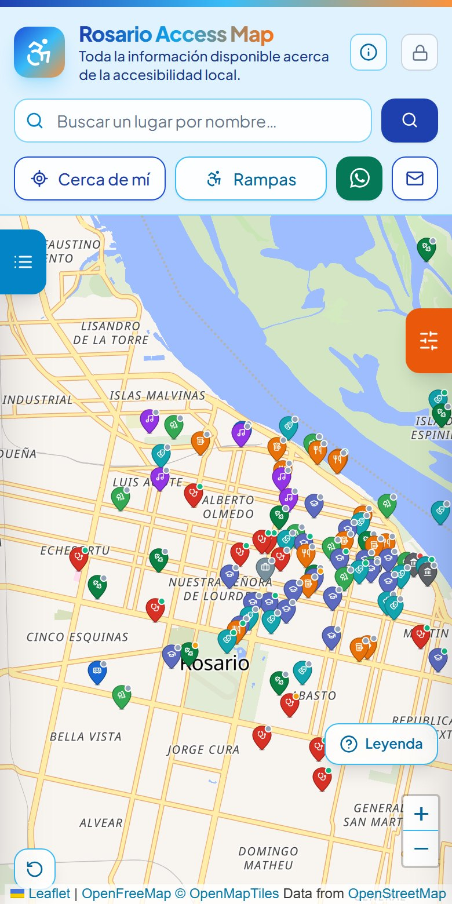

Bares, hospitales, escuelas, parques y oficinas de Rosario, con su accesibilidad para personas con movilidad reducida.

El circulito de la esquina dice si es accesible. El color y el dibujito, qué tipo de lugar es.
¿Fuiste y viste algo distinto? ¿Tiene baño adaptado o ascensor? Contanos desde su ficha en el mapa.
Gratis, sin registro y hecho en Rosario.